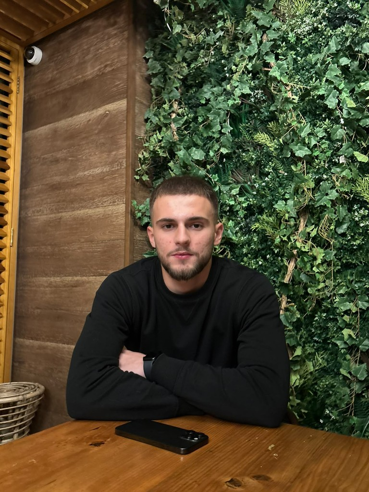
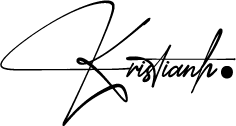
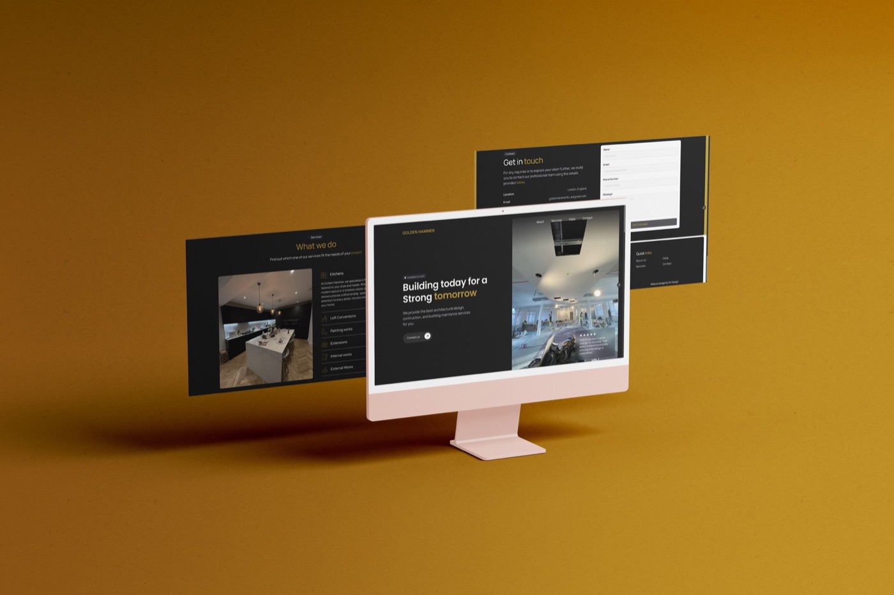
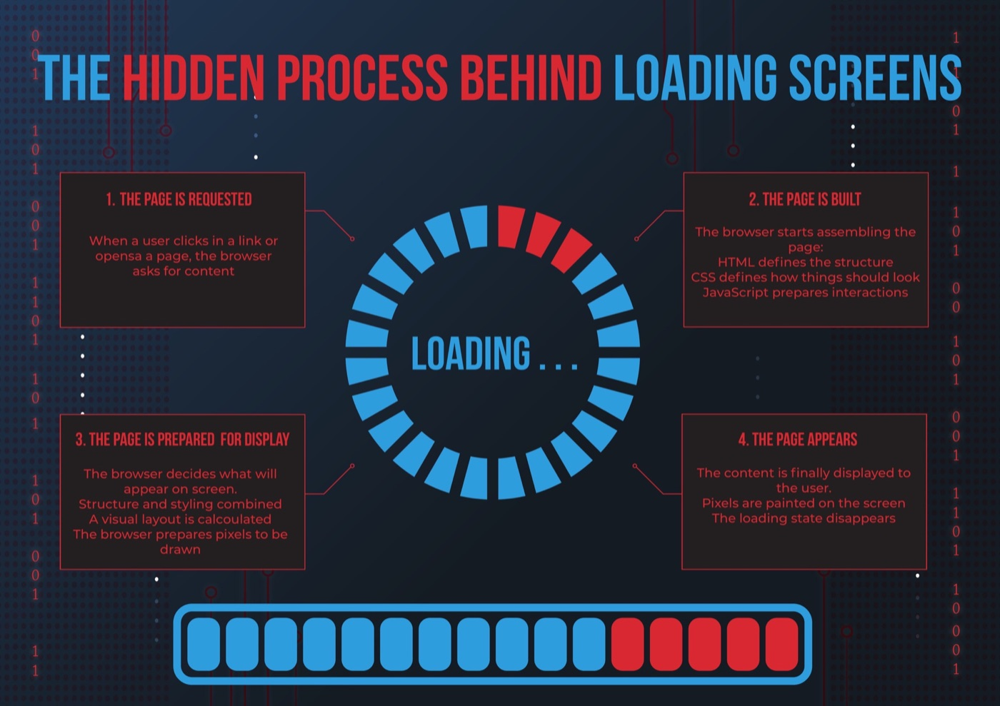
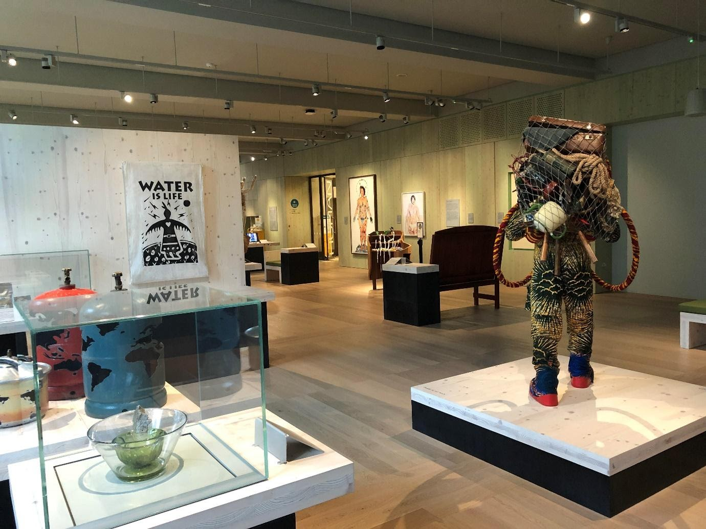

UI/UX Designer
Thoughtful design. Clear experiences.
I’m Kristian, a UI/UX designer with a background in graphic design and branding, currently studying at University of the Arts London.
See my workI’m looking to join a team where I can contribute to useful, considered digital experiences. I bring a visual design perspective, curiosity about how people use products, and a willingness to learn through feedback and collaboration.
UI/UX Design
I approach interfaces with a focus on clarity, usability, and the people using them. I’m keen to explore ideas, learn from feedback, and refine the details with a team.
Graphic Design & Branding
My graphic design and branding experience informs how I work with typography, layout, and visual identity to create clear, consistent communication.
Web Design
I’m developing my web design practice at University of the Arts London, connecting visual design with the structure and flow of digital experiences.

About me.
I’m Kristian, a UI/UX designer in my second year at University of the Arts London. My background spans graphic design, branding, and web design, with experience across university projects, personal work, and professional settings.
I’m organised and disciplined in how I work, but always open to a different perspective. I like bringing structure to a project, listening carefully, and making time for feedback.
I want to keep learning from the people around me and put that learning into practice. I’m ready to ask questions, take responsibility, and help wherever I can, so I can make a meaningful contribution to both the work and the team.

Selected work.
See all(2023 — 2025)

Golden Hammer Construction Ltd
Website and logo design for a construction company, from an open brief to a complete digital presence.

Making the Invisible Visible
An anaglyph poster that reveals what really happens behind a loading screen.

Hands-On: Tactile Interaction at the Wellcome Collection
A field study of how button-based exhibits turn museum visitors from observers into participants.